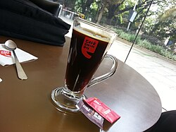
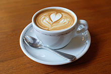
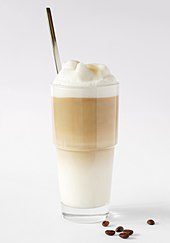

Caffè Americano (also known as Americano or American; Italian pronunciation: [kafˈfɛ ameriˈkaːno]; Spanish: café americano, lit. 'American coffee') is a type of coffee drink prepared by diluting an espresso with hot water (typically 1:5), giving it a different flavor from traditionally brewed coffee. Its strength varies with the number of shots of espresso and amount of water added. The name is also spelled with varying capitalization and use of diacritics: e.g., café americano.
In Italy, caffè americano may mean either espresso with hot water or long-filtered coffee, but the latter is more precisely called caffè all'americana ("café in the American style").

A cappuccino (/ˌkæpʊˈtʃiːnoʊ/ i; Italian pronunciation: [kapputˈtʃiːno]; Italian plural: cappuccini from German Kapuziner) is an espresso-based coffee drink that is traditionally prepared with steamed milk foam (microfoam).
Variations of the drink involve the use of cream instead of milk, using non-dairy milk substitutes and flavoring with cinnamon (in the United States) or chocolate powder (in Europe).[3][4] It is typically smaller in volume than a caffè latte, with a thicker layer of microfoam.

Latte macchiato (Italian pronunciation: [ˈlatte makˈkjaːto]) is a coffee beverage. The name is Italian for "stained milk" or "marked milk", referring to the way the drink is prepared by pouring a shot of espresso into steamed milk. It is a play on espresso macchiato, an older drink consisting of espresso marked with a dollop or two of milk or cream.